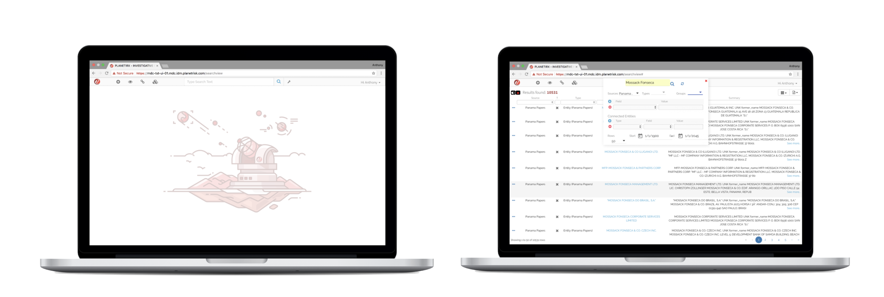

Projects
Data Visualization Application (2018)
An advanced analytical tool for users to explore and analyze data with ease. Featuring search capabilities and graph analysis, this tool provides deep insights and visualizations, enabling users to make informed decisions based on data exploration.
Risk Alerting Mobile App (2017)

A mobile app designed to provide users with actionable alerts by analyzing publicly available information from social media, news sources, and various online platforms. This app ensures users stay informed and ready to respond to emerging trends and potential risks in real-time.
Geospatial Predictive Assessments (2011)

Utilized advanced statistical and machine learning models to perform in-depth analysis of historical spatial data, enabling accurate predictions of future events and trends. This project demonstrated the power of predictive analytics in uncovering valuable insights from complex datasets.